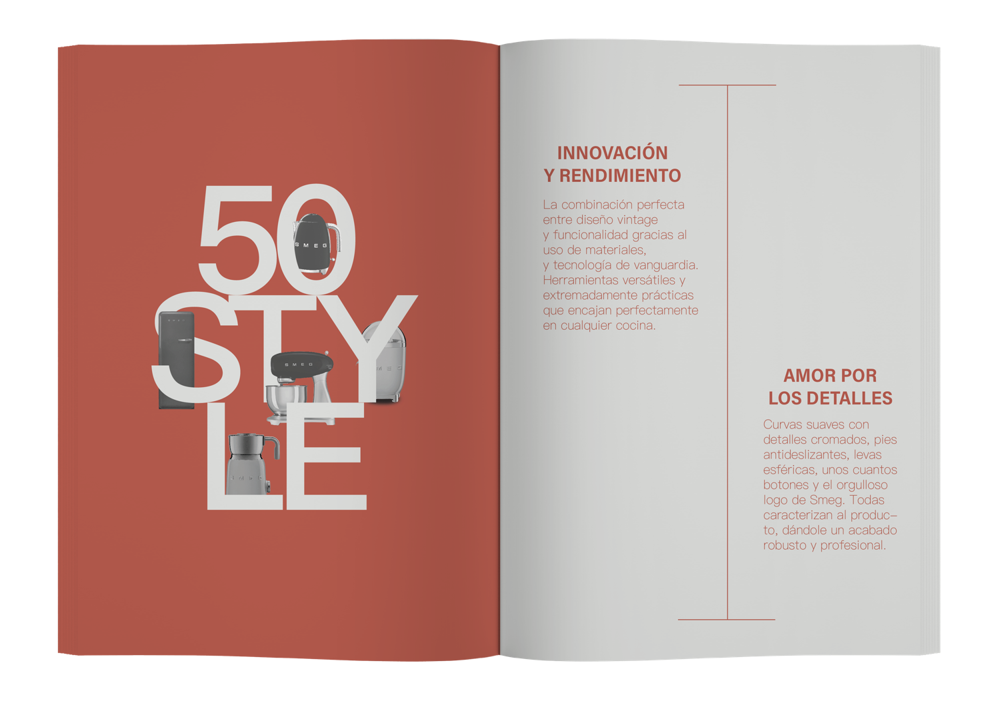

Domestico sin genero
Este fanzine, surge a partir de una consigna que proponía trabajar con un objeto cotidiano —en este caso, electrodomésticos— y desarrollar una exposición conceptual a partir de una marca específica. La marca elegida fue SMEG, no solo por su fuerte identidad visual, sino por la carga simbólica que sus productos tienen dentro del espacio doméstico. A través de una narrativa editorial, el proyecto recorre la historia de la marca, sus hitos productivos y su estética retro-futurista, para reflexionar sobre cómo los electrodomésticos han sido históricamente asociados a roles de género dentro del hogar. El fanzine propone una lectura crítica del espacio doméstico como un territorio construido culturalmente, donde el diseño, la tecnología y el marketing influyen en la percepción de lo “femenino” y lo “masculino”. Desde una puesta gráfica sobria y estructurada, el proyecto recontextualiza que el diseño también puede ser una herramienta para cuestionar y transformar imaginarios sociales.
1 año - Laboratorio de diseño 2